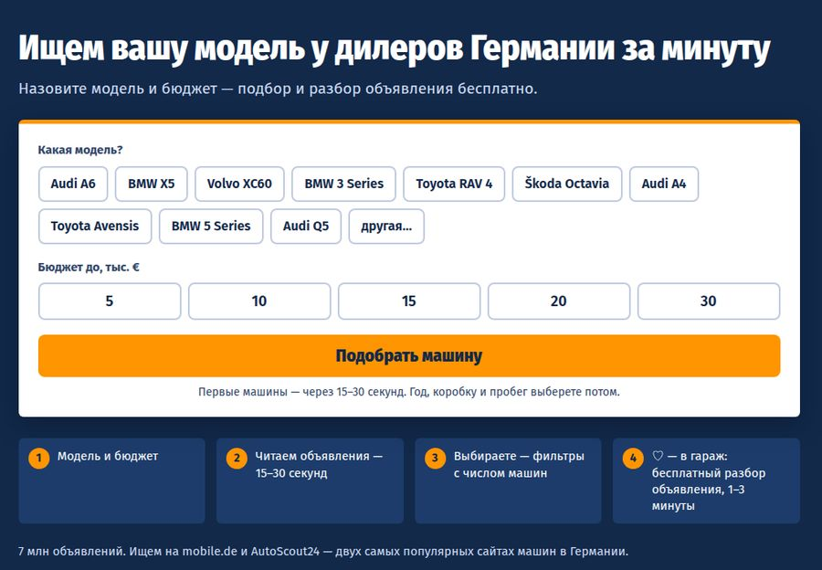
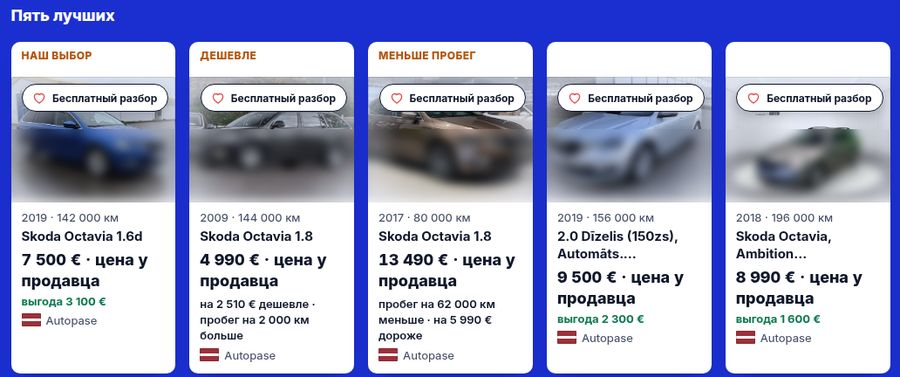
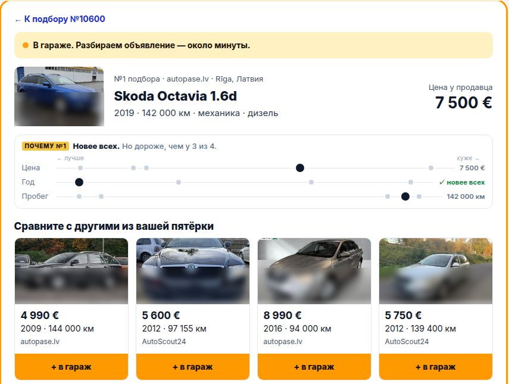
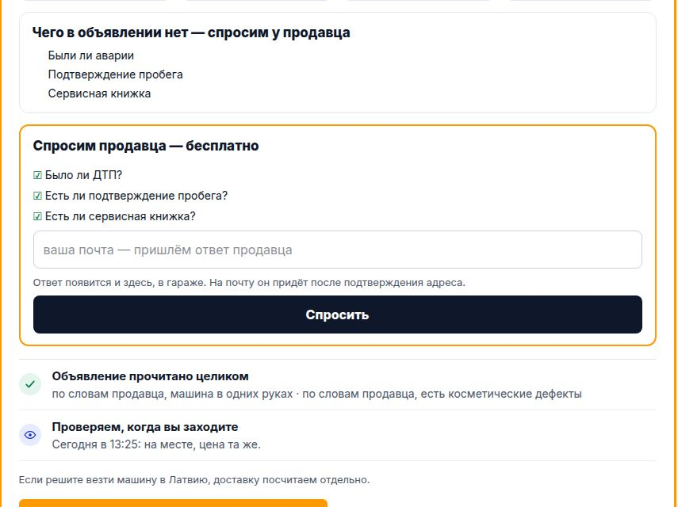

← на картуH-012идёт с 08.11, 13:29 по Риге
Новая версия целиком
Мысль одной фразой
Если человек пройдёт новую версию целиком — простой вход, пять разных машин, понятное сердечко и гараж с разбором, — он будет класть машину в гараж вдвое чаще.
Что видит человек

Вход: модель кнопками и бюджет одним рядом.

Пять разных машин: у каждой — чем лучше и чем хуже нашего выбора.

После сердечка гараж открыт на этой машине, разбор — около минуты.

«Спросим продавца — бесплатно»: почта — внутри разбора.
Почему так думаем
- Сейчас из 100 увидевших машины в гараж кладут 8.
- По всему сайту 72 из 100 не открывают ни одной машины, а в пятёрке почти одинаковые машины.
- После сердечка не было сказано, что человек получит.
Что меняем
- В новой половине группы Антона: А — лендинг «модель и бюджет», Б — полоса хода поиска, В — пять разных машин, Г — фильтры и весь список, Д — сердечко с обещанием.
- У всей группы Антона, после сердечка: Е — гараж на этой машине, Ж — разбор крупно, З — «Спросим продавца» с почтой, И — отчёт 2,90 €, К — строка про доставку.
- Отчёт 2,90 € собран, но выключен: включает только Антон.
- Люди из рекламы (когда она начнётся) тоже попадут в новую версию, но в это число не входят.
Число
8→16сейчас → нужно: из 100 увидевших машины кладут в гараж (цель Антона — 60)
Когда ответ
Около 23.11 — когда в каждой половине наберётся 258 человек, увидевших машины. Раньше остановим, если в новой половине до машин будет доходить на 5 из 100 меньше, чем в старой.
Вывод
Ждём. Вывод — после 23.11.